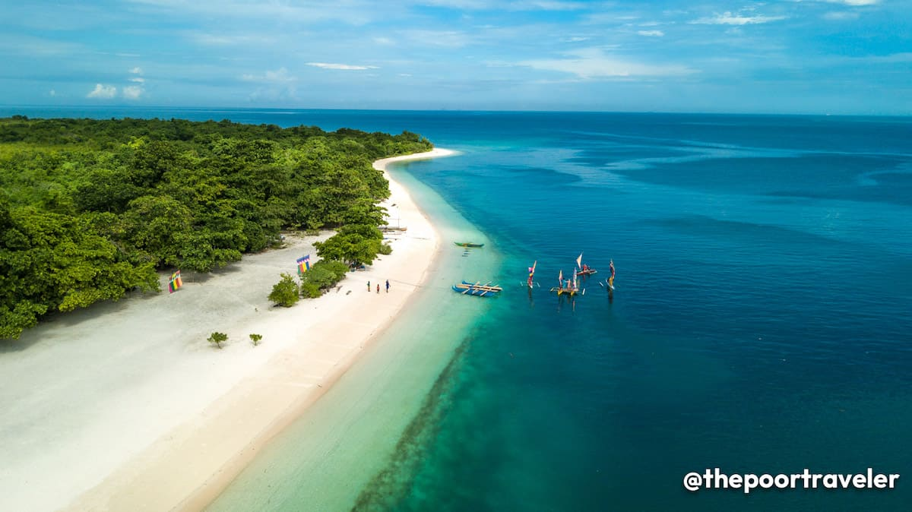

Davao
Davao is large city, which is not nice to think about because we have reasons why we go there.
I didn't walk much, but it was fun; it's just that the houses are far away since i got to go with my mom and meet her younger siblings, which is painful to think about.
It's fantastic that i got to meet my relatives there and have fun, but it sucks that her sibling was fighting for his life that day, and sadly he passed away, it feels heavy as i had to spend Christmas and New year's with a gloomy feeling, but life must go on.
I made some of whom i still keep in touch with now, but not many.